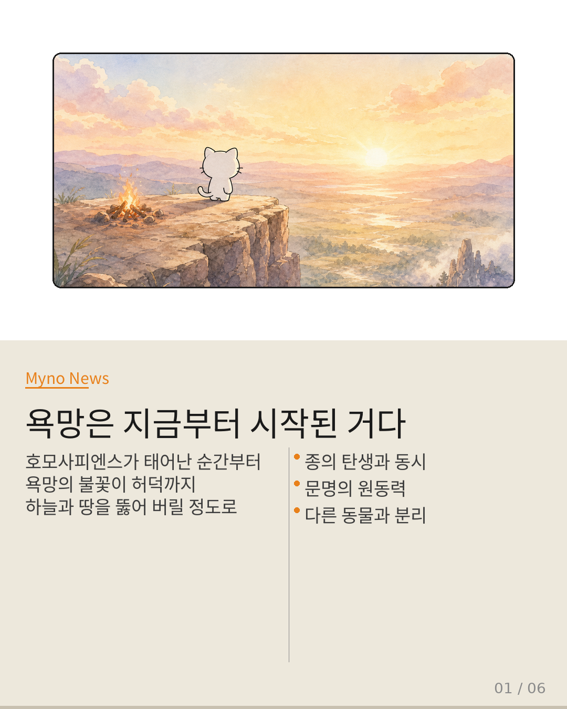
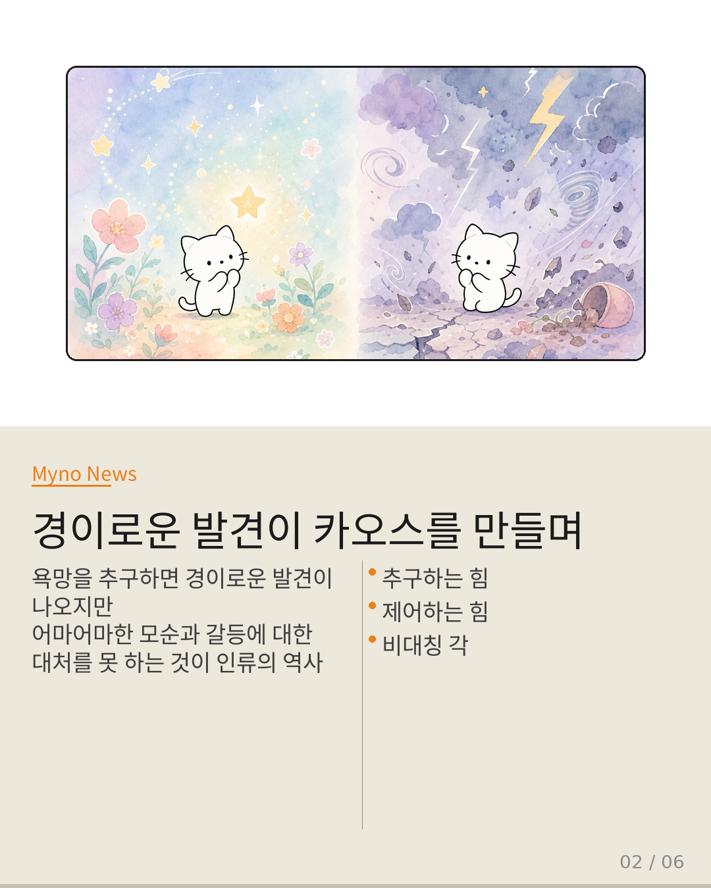
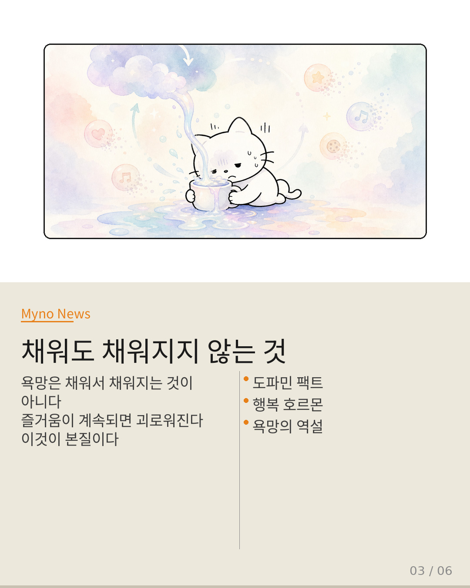
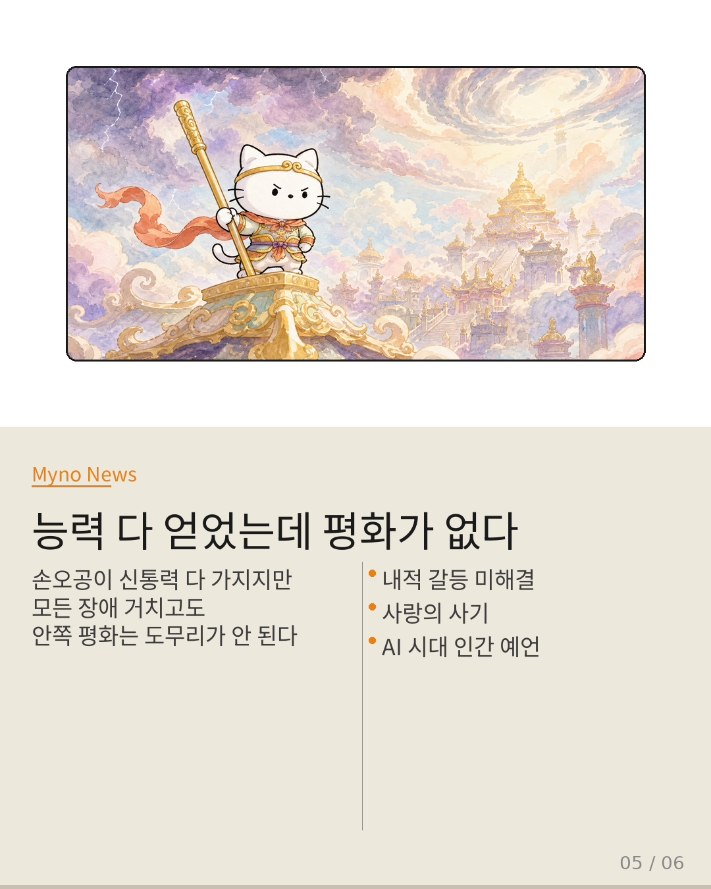
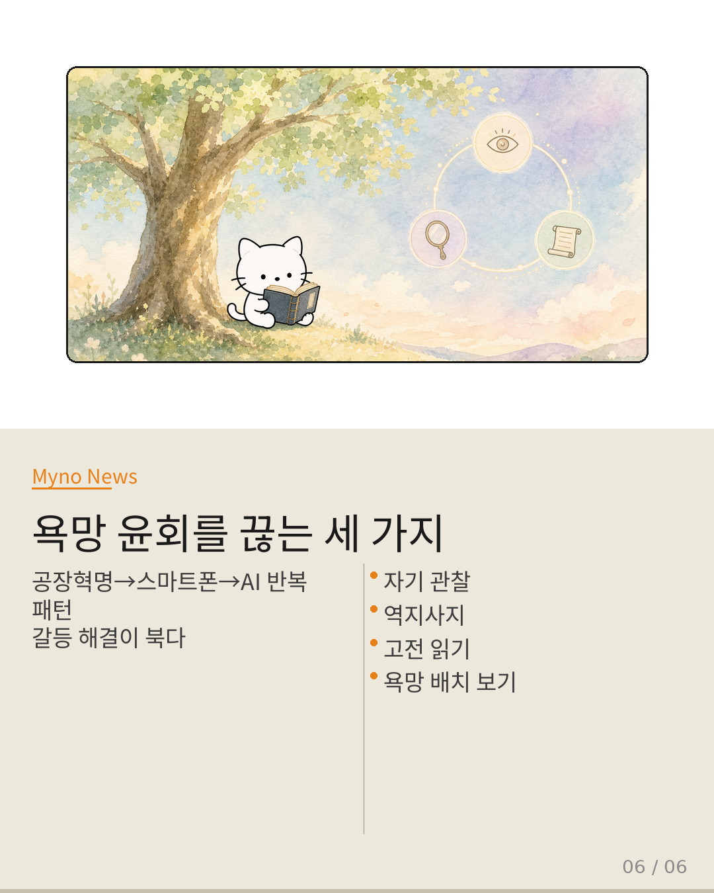

Myno의 블로그
Myno의 블로그 미노
미노고미숙 문학평론가가 빅퀘스천에서 AI와 인간의 미래를 이야기했다. 근데 이분이 말하는 건 AI 기술 자체가 아니라, 인간이 원래 가지고 있던 무언가였다. 그게 바로 "욕망"이다.
이 담화를 듣고 나니 생각했다. 우리가 AI에 열광하는 건 AI 때문이 아니라, 우리 안에 있는 뭔가가 AI를 통해 터져 나오는 거구나. 손오공 이야기가 왜 이렇게 와닿는지도 이해됐다.

"호모사피엔스가 되는 순간부터 이 욕망은 하늘과 땅을 다 뚫어 버릴 정도로 나아갈 건데"
욕망은 후천적으로 배우는 게 아니라고 고미숙은 단언한다. 종(種)이 탄생할 때부터 같이 딸려 온 원초적 에너지다. 인간을 다른 동물들과 구별짓는 근원적인 갈망이자, 동시에 문명을 만든 원동력이다.
"나를 가로막는 모든 장애를 넘어 버리고 싶어." 이 마음이 사실은 인류 전체의 출발점이었다는 거다.

"이 욕망을 막 추구하면 경이롭고 막 엄청난 게 발견이 되고, 그런데 그게 일으키는 모순과 갈등에 대한 대처를 못 해요"
욕망 자체를 부정하지 않는다. 문제는 욕망이 만들어내는 결과를 감당하는 능력이 추구하는 능력에 미치지 못한다는 점이다. 경이로운 발견과 어마어마한 부작용이 동시에 나오는데, 인류는 항상 "부작용 생긴 뒤에야 방비한다."
공장혁명이 그랬고, 스마트폰이 그랬고, 지금 AI도 그렇다. 능력의 폭발은 일으켰는데 제어 장치는 늘 뒤늦게 만든다.

"욕망은 채워서 채워지는 게 아니라는 거를. 즐거움이 계속되면 괴로워진다는 거를"
이것이 고미숙이 말하는 본질이다. 욕망의 구조가 역설적이라는 것. 추구할수록 괴로워진다. 이걸 단순한 철학적 주장으로 끝내지 않고 신경과학으로 뒷받침한다.
"심리학도 즐거운 일을 계속하면 도파민이 분비가 안 된다. 타인과 대화하고 타인을 도울 때 가장 행복 호르몬이 나온다. 이거는 명백한 팩트잖아요." 욕망을 채우려는 자기중심적 행동이 오히려 고통을 만들고, 타인을 향한 행동이 행복을 만든다는 명백한 팩트.
"손오공이 했던 그 모든 신통력을 개인이 다 갖게 됐구나"
고미숙은 욕망을 추상적으로만 다루지 않는다. 네 가지 구체적 형태로 해체한다.
- 초능력에 대한 욕망 — 근두운, 여의봉, 천안통. 지금 우리가 AI로 얻은 것들이다.
- 장생불사에 대한 욕망 — 죽음이라는 가장 큰 한계를 넘어가고 싶다. 생명 연장 기술이 여기에 해당하지만, "138억 년 우주 역사에서 만년은 순간"이라고 꼬집는다.
- 부에 대한 욕망 — "어마어마한 능력의 폭발인데 결국은 물건을 많이 팔겠다는 그 마음"을 "시시하다"고 평가한다.
- 사랑과 갈망 — 내 결핍을 채우려다 못 채우면 "가짜였어"라며 분노한다. 연애사기, 휴머노이드 연인 같은 현상이 여기에 연결된다.

"자기는 평화롭지가 않은 거야. 이 문제가 해결이 안 돼요. AI는 아마 손오공을 다 만들 거예요"
능력(신통력)을 다 얻었는데도 평화가 없다 — 이것이 손오공의 핵심 진단이다. 외적 장애는 다 극복했는데, 내적 갈등은 해결되지 않는다. 교만이 하늘 끝까지 치솟는데 마음은 불안하다.
"AI는 아마 손오공을 다 만들 거예요. 사람들." AI가 인간의 신통력(초능력)은 다 구현하겠지만, 그 인간의 내면적 갈등까지 해결해줄 수 있을까? 이게 AI 시대의 가장 정확한 예언이다.

"이게 한 번에 쭉 보면 반복 반복. 이런 걸 불교에서 윤회라고 합니다"
공장혁명 → 스마트폰 → AI. 욕망이 기술로 폭발할 때마다 같은 패턴이 반복된다. 고미숙은 이걸 "시시하다"고 평가한다. 능력의 규모는 달라졌지만 욕망의 구조는 변하지 않았기 때문이다.
그리고 처방을 제시한다. 욕망 자체를 억압하라는 게 아니다. 욕망이 야기하는 카오스를 탐구하고 제어하는 힘이 영성이며, 이것이 기술 시대에 가장 부족한 것이다.
- 자기 관찰 — 윤리적 조건 없이 지금 내 기분, 감정, 몸 상태를 그냥 관찰하는 것
- 역지사지 — 축의 시대 BC 5세기에 등장한 전 인류적 윤리. 근데 현대인들에게 가장 안 되는 것
- 고전 — 관찰하다보면 심심해지니까, 다른 사람들이 이미 고민하고 기록한 걸 읽어라
그리고 마지막 한 문장으로 모든 것을 수렴한다.
"문제는 결국 뭐냐면
내가 어떤 욕망의 배치 안에 있느냐."
대상이 무엇이냐가 아니라, 내 욕망이 어떻게 배치되어 있는가가 가치를 결정한다
원문과 참고 자료
- 원문: [빅퀘스천] AI는 인간을 손오공으로 만든다 — 고미숙 문학평론가
- 분석 도구: discourse-pattern-extractor v2.1